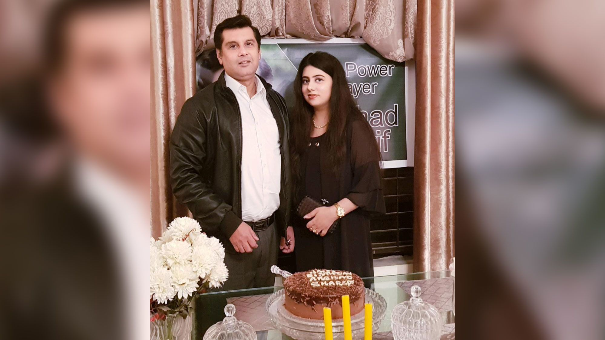

Biography Of Arshad Sharif
Arshad Sharif is a Famous Pakistani Journalist, who was born on Thursday, Feb 22, 1973 in Karachi, Pakistan. Find Arshad Sharif wife children, age, family, mother, death, pics, career, biography & more. Arshad Sharif was killed on October 23 2022. Before murder Arshad Sharif went to London from Dubai a few days ago and went to Kenya from there and he has been shot in Kenya. Get information about all key achievements or accomplishments of Arshad Sharif.
| Date of Birth : | Thursday, Feb 22, 1973 |
| Age: | 49 |
| Birth Place: | Karachi, Pakistan |
| Death: | Sunday, Oct 23, 2022 |
| Residence: | Islamabad, Pakistan |
| Country: | Pakistan |
| Profession: | Journalists |
| Education: | MS in public administration from Quaid e Azam University Islamabad |
| Father: | Muhammad Sharif |
| Mother: | Riffat Ara Alvi |
| Nationality: | Pakistani |
| Siblings: | Ashraf Sharif |
| Brother: | Major Ashraf Sharif |
| Religion: | Islam |
| Spouse: | Javeria Siddique, she is a second wife |
| Weight: | 65 |
| Height: | 5 feet 8 inches |
| Net Worth: | 19 Million |
| Category: | Anchors |
